51° Sesión Ordinaria del Consejo de Derechos Humanos
Haz clic para ver detalles

Foro de Pueblos
Haz clic para ver detalles

Ilustraciones
Haz clic para ver detalles

Diseño para Redes Sociales
Haz clic para ver detalles

Campaña de Canon de Agua
Haz clic para ver detalles

Stickers Ilustrados
Haz clic para ver detalles


 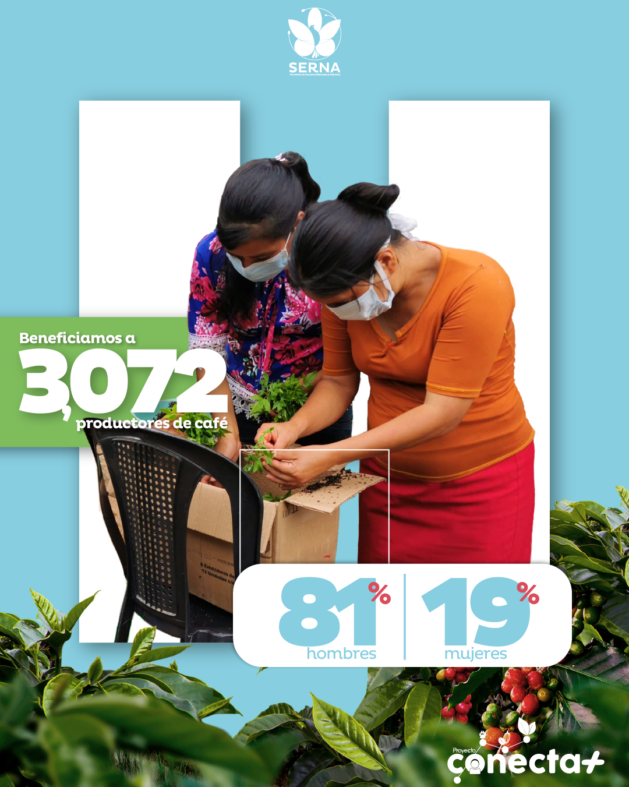
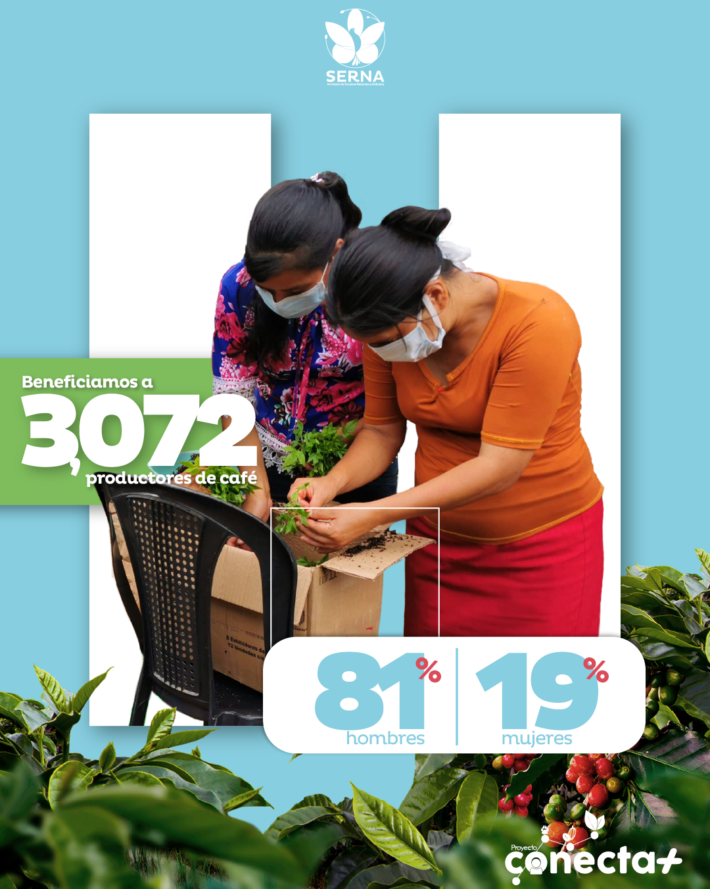
 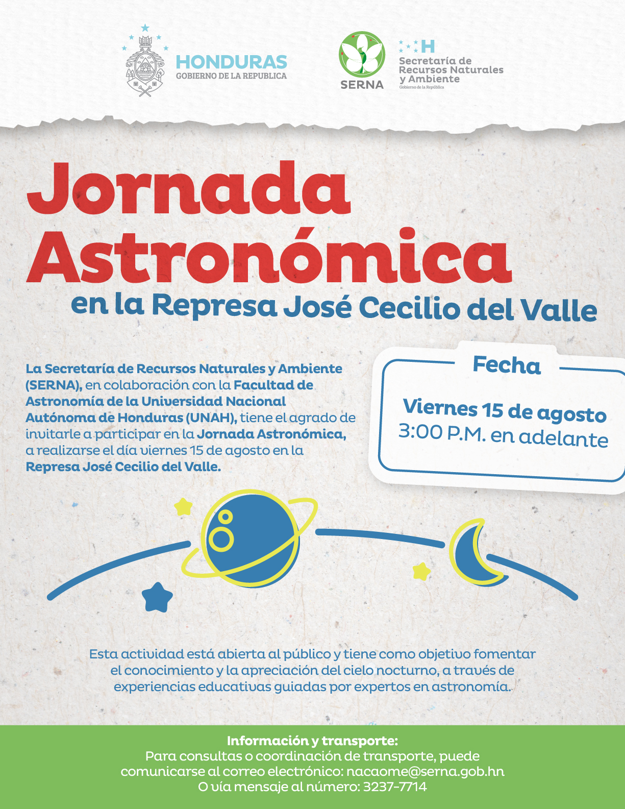
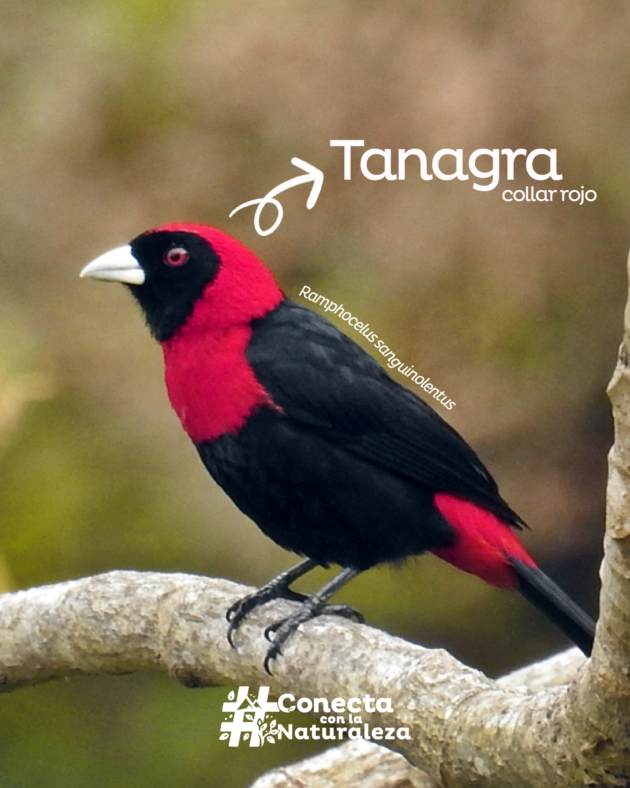
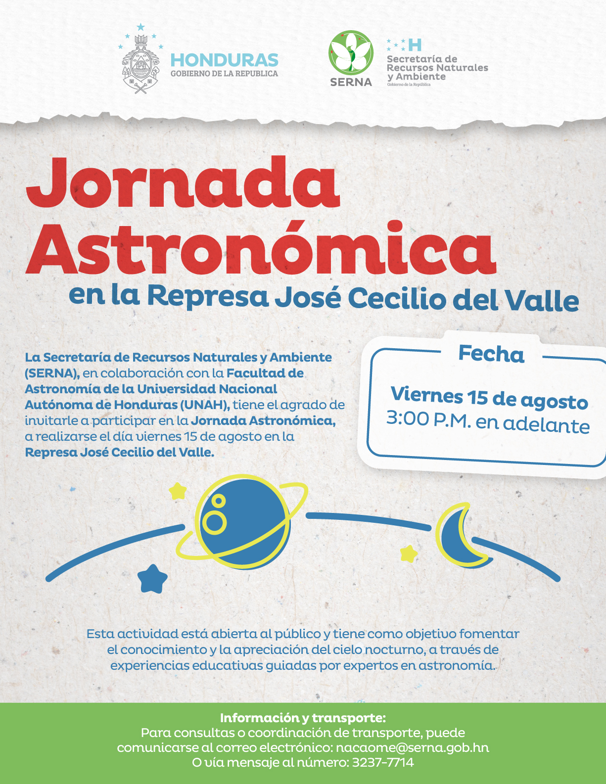
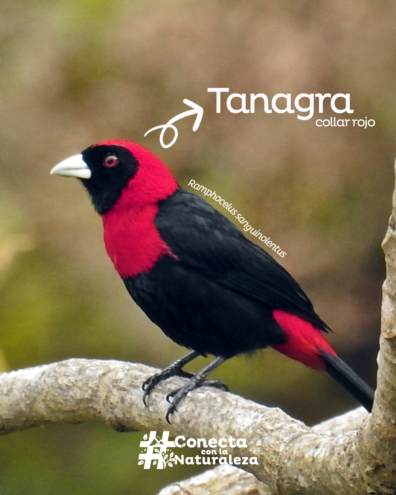


 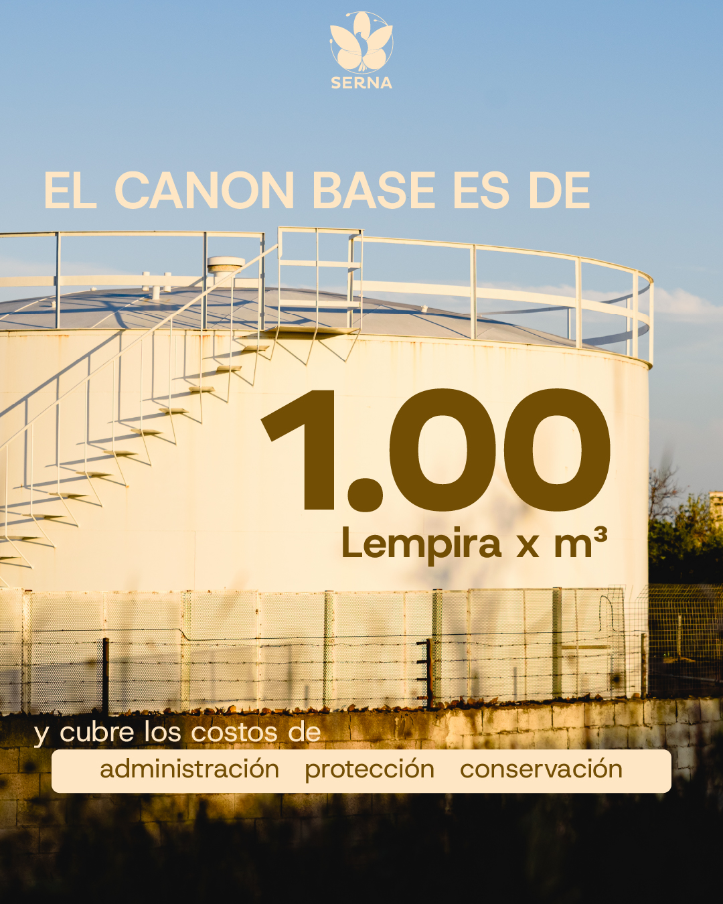
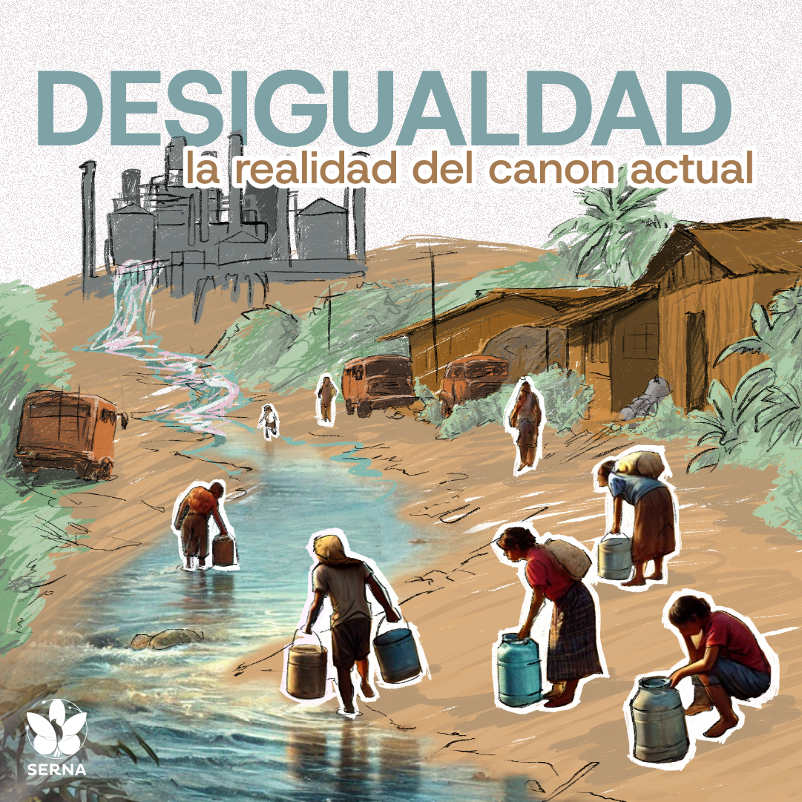
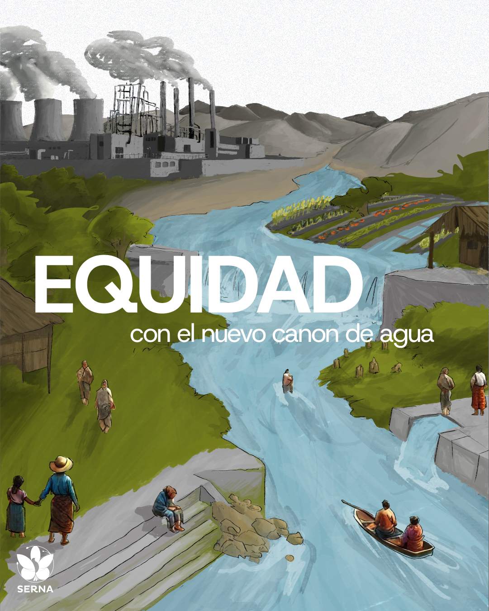
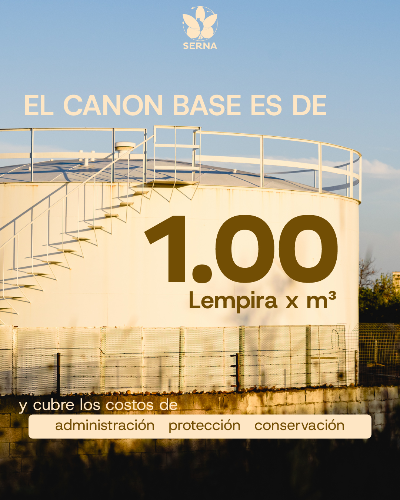
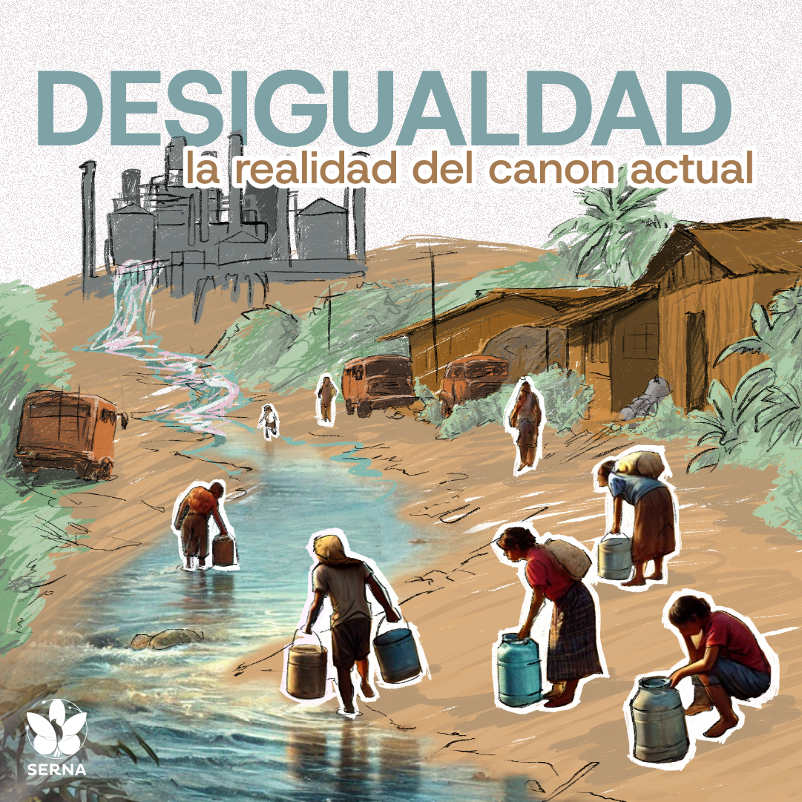
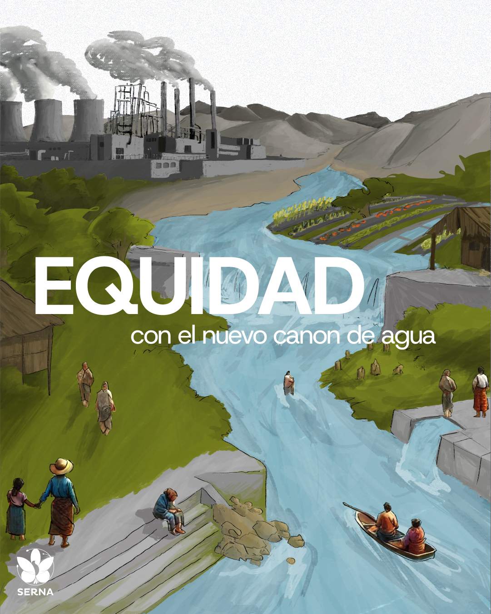